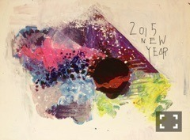

| 2015/01 05 Mon | 偽、鉱物。620回目 |

2015年
あけましておめでとうございます。
CDTVで年越し！
初めて家族と年を越しませんでした。
今年はだいすきなお洋服に
芸術にお芝居に関わりたい。
勉強したい。
自分にしか出せないものを
もっと出していきたいです。
感謝祭昼の部では
1年ぶりにサンドアートを
披露しました〜
お客さんがいる前での
パフォーマンスは初めてだったから
ほんとに緊張した...
そしてまりっか'17
大感謝祭ということなので、
サプライズ披露〜
みなさん喜んでくださって
(た気がして)嬉しかったです。
まりっか'17を歌ってる時の私は
まりっかをやっているんだな
って気になります。
ピンクのヘッドホンに制服。
ゆるくてポップでヘンテコな世界。
みんなのまりっかのイメージ
なのかな、と。勝手に、
普段の私のようで私じゃない。
17歳の私でした。
そのイメージもまた、
変えていきたいなとも思ったり。
18歳、2014年の
私はどんな存在だったのかな。
また何処かでまりっかが
歌いに来るかもしれない！
いつになるか、もうないのか、、
その時はどうぞよろしく！！

年が明けてしばらくは
家族と過ごしています。
おばあちゃんに会ったり、
久しぶりに大阪に住んでた時代の
幼馴染に会ったり！
年明けの買い物は楽しい。
いろんな人に出会いたい
いろんなことを記憶したい
私は人々の記憶に残るのか
何をすれば残るのか

キ オ ク
き
お
く
知らない場所に行って
たくさん吸収して
好きなことが繋がりますように

まりか
コメント(724)
2015/01/05 00:18